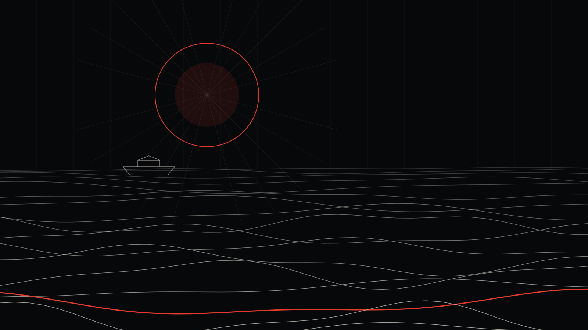

Diyarbakır Instagram Reklamı ve Sosyal Medya Yönetimi: Bölgenin En Büyük Pazarında Öne Çıkmak

Diyarbakır'da bir kafe açtın, bir klinik kurdun ya da bir mağazayı büyütmek istiyorsun. Şehrin her köşesinde senin gibi onlarca işletme varken, müşteri neden seni seçsin?
Diyarbakır, Güneydoğu'nun en büyük şehri ve en büyük pazarı. Bu, hem büyük bir fırsat hem de ciddi bir rekabet demek. Küçük ilçelerde düzgün bir Instagram hesabı tek başına fark yaratır; Diyarbakır'ın merkez ilçelerinde ise artık herkesin bir hesabı var. Fark yaratan, stratejisi olan hesap.
Diyarbakır'ı tek bir pazar sanmak hatası
Diyarbakır'ın 17 ilçesi var ve aralarındaki fark çok büyük:
- Merkez ilçeler (Kayapınar, Bağlar, Yenişehir, Sur): Yoğun nüfus, yoğun rekabet, çok çeşitli sektörler.
- Büyük ilçeler (Ergani, Bismil, Silvan, Çınar): Kendi çarşısı ve müşteri kitlesi olan, orta ölçekli pazarlar.
- Küçük ilçeler (Çermik, Eğil, Lice, Kulp, Hani, Hazro, Kocaköy, Çüngüş, Dicle): Düşük maliyetle tamamına ulaşılabilecek yerel pazarlar.
Reklamı "Diyarbakır geneli" diye açmak, Kayapınar'daki bir kafenin bütçesini Kulp'taki insanlara harcaması demek. Her ilçe için ayrı rehber hazırladık:
- Merkez: Kayapınar, Bağlar, Yenişehir, Sur
- Büyük ilçeler: Ergani, Bismil, Silvan, Çınar
- Diğer ilçeler: Çermik, Eğil, Lice, Kulp, Hani, Hazro, Kocaköy, Çüngüş, Dicle
Rekabetin yoğun olduğu yerde kazanmanın yolu: Kreatif
Diyarbakır'ın merkez ilçelerinde aynı kitleye aynı gün onlarca işletme reklam gösteriyor. Bu ortamda hedefleme ayarları herkes için aşağı yukarı aynı; farkı reklamın kendisi yaratıyor:
- İlk saniye: Ürün, mekân ya da yüz hemen görünmeli. Yavaş açılan logo, kaydırılıp geçilir.
- Gerçeklik: Stok fotoğraf değil, gerçek mekân, gerçek ürün, gerçek insan.
- Test: Aynı mesajı üç farklı açılışla deneyip kazananı bulmak. Bunu bu yazıda detaylı anlattık.
Diyarbakır'da öne çıkan sektörler
- Yeme-içme: Kahvaltı salonları, ciğerciler, kafeler, tatlıcılar. Diyarbakır'da kahvaltı kültürü başlı başına bir turizm ürünü.
- Sağlık: Diş klinikleri, estetik ve güzellik merkezleri, özel muayenehaneler.
- Eğitim: Kurslar, dershaneler, özel okullar. Kayıt dönemleri reklam için kritik.
- Emlak ve inşaat: Yeni konut projeleri, satılık ve kiralık ilanlar.
- Düğün sektörü: Gelinlik, düğün salonu, organizasyon, fotoğrafçılık.
- Turizm: Sur içi, surlar ve Hevsel Bahçeleri, UNESCO Dünya Mirası Listesi'nde. Otel, rehber ve restoranlar için Diyarbakır dışındaki gezginler önemli bir kitle.
Dil ve kitle
Diyarbakır'da Türkçe ve Kürtçe günlük hayatta iç içe. Kürtçe reklam metinleri, bazı sektörlerde ve kitlelerde etkileşimi belirgin şekilde artırabiliyor. Tahminle değil, iki versiyonu test ederek karar veriyoruz.
Fiyatlar
Reklam bütçesi doğrudan Meta'ya, TikTok'a ya da Google'a ödenir. Merkez ilçelerde rekabet nedeniyle bütçe küçük ilçelere göre daha yüksek tutulmalı. Sosyal medya paketlerimiz (tasarım, içerik, reklam yönetimi, rapor) aylık 15.000 TL'den başlıyor. Bütçe hesabı için bu rehbere bakabilirsin.

Bu yazıyı kim yazdı? Neden bize güvenebilirsin?
Merhaba, ben İsa Tosun; Noah Reklam Ajansı'nın kurucusuyum. Görsel iletişim tasarımcısıyım. Marka kimliği, sosyal medya reklamcılığı, arayüz tasarımı, motion design, 3D görselleştirme ve yapay zekâ destekli prodüksiyon üzerine çalışıyorum. Strateji, tasarım ve reklamı tek bir elde topluyoruz; yani reklamını kuran kişiyle görselini tasarlayan ekip aynı masada.
Ajansımız İstanbul'da. Ama Instagram reklamı tamamen dijital yürüyen bir iş: Diyarbakır'da bir işletmeyle çalışmak, İstanbul'daki bir işletmeyle çalışmaktan farksız. Toplantıyı WhatsApp'ta ya da görüntülü görüşmede yapıyoruz, raporu her ay telefonuna gönderiyoruz.
Neden içinin rahat olabileceğini kısaca anlatayım:
- Fiyatlarımız açık. Sosyal medya paketlerimiz aylık 15.000 TL, 27.000 TL ve 39.000 TL; sitede yazıyor, sürpriz yok.
- Paran ajansta durmaz. Reklam hesabı senin işletmenin adına açılır, reklam bütçesi senin kartından doğrudan Meta'ya, TikTok'a ya da Google'a ödenir. Harcamanın tamamını kendi panelinden görürsün.
- Her ay rapor. Ne kadar harcandı, kaç kişiye ulaşıldı, kaç mesaj ya da satış geldi; hepsi anlaşılır bir raporla önüne gelir.
- Muhatabın belli. Bir çağrı merkezine değil, doğrudan bize yazarsın: 0546 632 83 39.
Diyarbakır'da işletmen için reklamın nasıl kurulacağını merak ediyorsan, reklam yönetimi sayfamıza göz atabilir ya da doğrudan WhatsApp'tan yazabilirsin.
Sıkça sorulan sorular
Diyarbakır'da Instagram reklamı için ne kadar bütçe gerekir?
Merkez ilçelerde rekabet yüksek olduğu için küçük ilçelere göre daha fazla bütçe gerekir. Bütçeyi hedefinden geriye hesaplıyoruz: ayda kaç mesaj ya da müşteri istiyorsun, sektöründe bir sonucun maliyeti ne? İlk ay gerçek rakamları netleştirir.
Diyarbakır'da bir ajansla mı, İstanbul'daki bir ajansla mı çalışmalıyım?
Önemli olan ajansın nerede olduğu değil, senin kitleni ve işini anlayıp anlamadığı. Reklam yönetimi tamamen dijital yürür; görüşmeleri WhatsApp ve görüntülü aramayla yapıyoruz.
Reklamım sadece kendi semtimde görünebilir mi?
Evet. Reklamı belirli bir adresin çevresindeki birkaç kilometreye, ya da yalnızca belirli ilçelere gösterebiliyoruz.
Kürtçe reklam hazırlıyor musunuz?
Evet. Kürtçe reklam metinleri hazırlayıp Türkçe versiyonla birlikte test ediyoruz.
İsa Tosun
Noah Reklam Ajansı'nın kurucusu. Strateji, tasarım ve dijital pazarlamayı tek bir rotada birleştiriyor.